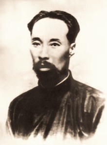
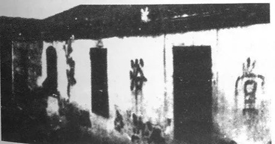
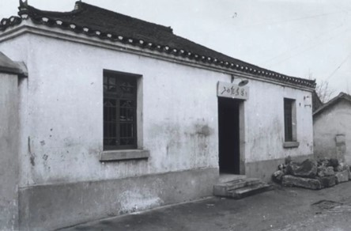
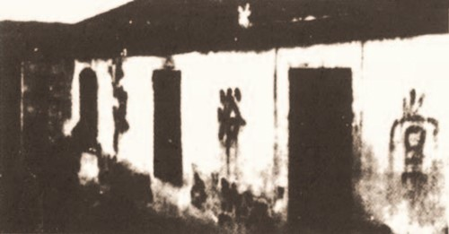
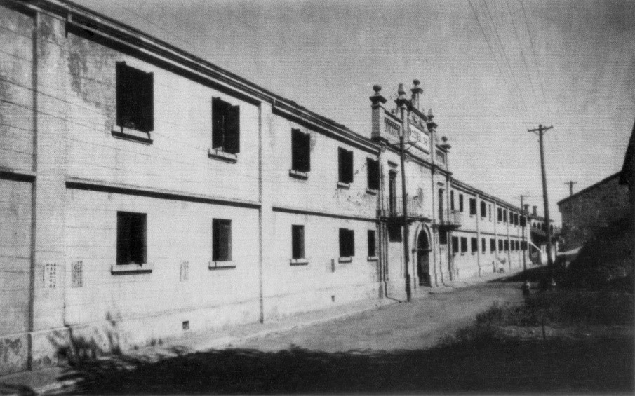
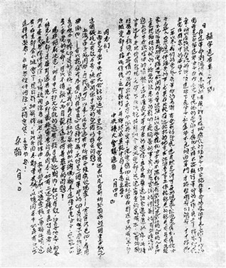
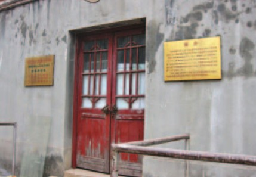

中国工人运动的杰出先驱：王荷波的革命生涯
前言：
在中国共产党的光辉历程中，有这样一位杰出的革命先驱，他出身贫寒，却凭借坚定的信念和不懈的斗争，成为中国工人运动的领袖，他就是王荷波。
一、早年经历与投身革命
王荷波，原名灼华，1882年出生于福建福州。因家境贫寒，他只读了两年私塾便开始协助父亲分担家庭重担。1901年，他离家出外谋生，先后在海军当过水手、在东北做过苦工。1916年，他进入南京浦镇机车车辆厂当钳工，亲身经历了帝国主义和资本家对工人的残酷压迫。
图：中国早期工人领袖王荷波
十月革命后，马克思主义在中国传播开来。王荷波在阅读《新青年》《劳动界》等进步书刊后，逐渐接触到新思想，认识到唯有团结工人的力量进行斗争，才能反抗三座大山的压迫。从1920年底起，他开始着手筹组工会，并在斗争中教育、组织群众。1921年3月，浦镇机车厂工会成立，王荷波被选为副会长。
图：浦镇机厂中华工会所在地
二、加入中国共产党与领导工人运动
1922年6月，王荷波在北京加入中国共产党，成为津浦铁路的第一名工人党员。同年秋天，他回到南京，组建了南京地区第一个共产党小组——浦镇党小组。此后，他一边通过工会为工人谋福利，一边在工人中传播马克思主义。
图：浦口浴堂街34号（浦镇党小组成立地）
1923年，王荷波代表津浦路铁路总工会筹备组到郑州出席京汉铁路总工会成立大会，并有力支援了京汉铁路工人的“二七”大罢工。同年6月，他出席中共第三次全国代表大会，当选为中央执行委员，成为党的历史上第一位工人出身的中央委员。此后，他继续投身革命，积极领导工人运动，为工人阶级的解放事业做出了巨大贡献。
图：“二七”大罢工指挥所旧址
三、担任中央监察委员会首任主席
1927年，党的五大选举产生了党的历史上第一个中央纪律检查机构——中央监察委员会，王荷波当选为首任主席。他深感责任重大，和其他监察委员们认真学习联共（布）经验，明确监委的职权，要求监察委员首先管好自己和亲人家属，履行监察职责，维护党中央权威和党的集中统一。中央监察委员会的其中一项职责，就是履行中共1926年发布的第一个反贪污腐化的文件《坚决清洗贪污腐化分子》。
图：中共五大开幕式会场旧址
然而，就在这一年，由于叛徒出卖，王荷波在北京被军阀张作霖逮捕。在狱中，他受尽酷刑，坚贞不屈，始终没有暴露党的组织和机关地址。1927年11月11日深夜，他在北京英勇就义，时年45岁。
图：中国共产党第一部惩治贪污腐化分子的文件《中央扩大会议通告——坚决清洗贪污腐化分子》
四、革命精神的传承与纪念
新中国成立后，王荷波的遗骸被移葬于八宝山革命公墓。周恩来总理亲临移葬典礼，并为王荷波扶柩，痛悼烈士亡灵。他的革命精神激励着一代又一代中国人不断前行。
图：南京工运纪念馆（“二七”大罢工指挥所旧址改造）
荷风飘万里，波光映千秋。王荷波的一生是革命的一生、战斗的一生。他用自己的实际行动践行了共产党员的初心和使命，为中国工人阶级的解放事业和党的建设做出了不可磨灭的贡献。让我们铭记这位革命先驱的英勇事迹和崇高精神，继续为实现中华民族伟大复兴的中国梦而努力奋斗！